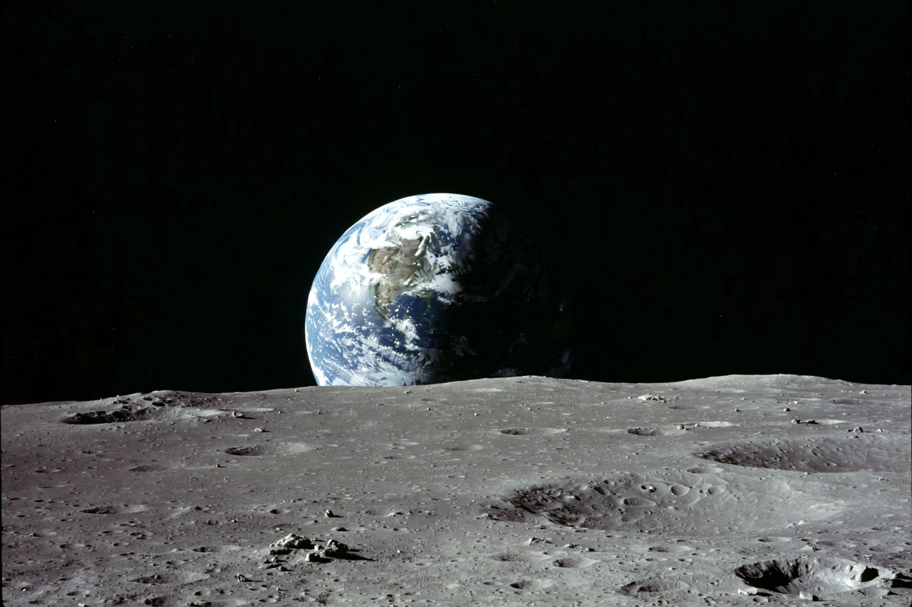

Earthrise
From Wikipedia, the free encyclopedia
| Earthrise | |
|---|---|
| Photographer | William Anders |
| Mission | Apollo 8 |
| Date | 24 December 1968 |
| NASA photo ID | AS08-14-2383 |

Earthrise, photographed by William Anders, Apollo 8.Earthrise is a photograph of Earth and part of the Moon's surface that was taken from lunar orbit by astronaut William Anders on 24 December 1968, during the Apollo 8 mission. It shows the blue and white Earth rising above the grey lunar horizon, and is one of the most influential photographs ever taken — often credited with helping to inspire the modern environmental movement.
The crew — Anders, Frank Borman and Jim Lovell — were the first humans to orbit the Moon. As their spacecraft came around the lunar far side on its fourth orbit, Earth appeared over the horizon; Anders grabbed a colour film magazine for the Hasselblad camera and took the famous frame, exclaiming at the sight while Lovell noted the colours. A similar black-and-white image had been captured minutes earlier.
Impact
Earthrise appeared on a US postage stamp in 1969 and on countless magazine covers; nature photographer Galen Rowell called it "the most influential environmental photograph ever taken". Together with the later Apollo 17 "Blue Marble" image, it gave the public a direct view of Earth as a single, fragile world — an effect later named the "overview effect".
In 2013, NASA's reconstruction work used modern lunar imagery to recreate the exact moment and viewpoint, confirming the spacecraft's orientation and the sequence of photographs the crew took.